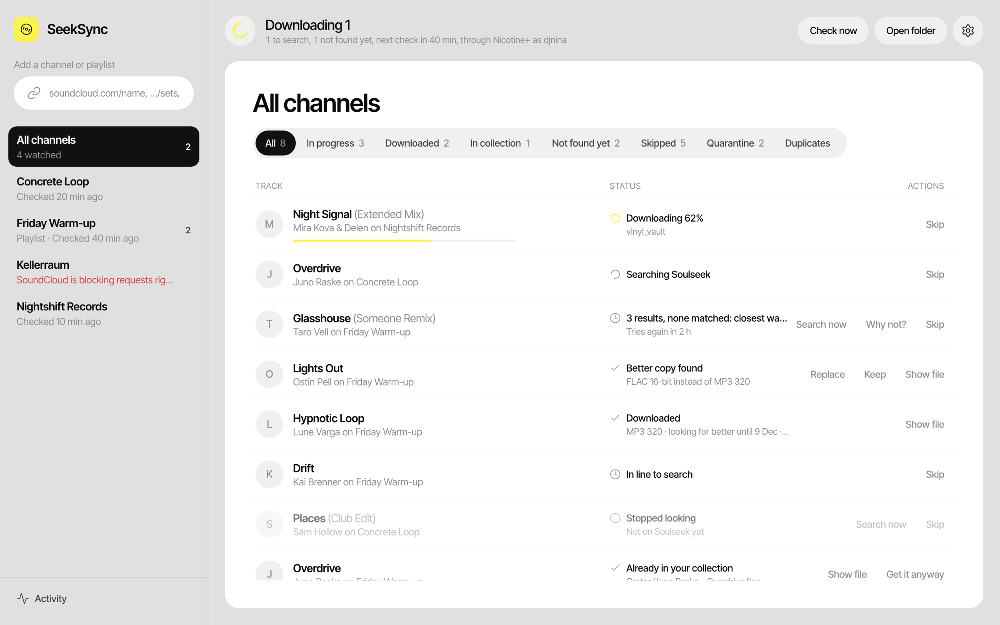

Follow
Add a SoundCloud profile or playlist, or a public Spotify playlist. SeekSync checks it every hour and notices new tracks.
Free · Open source · Mac and Windows
SeekSync watches the labels, artists and playlists you care about. When a new track shows up, it finds the best copy on Soulseek, checks it, tags it and puts it in your music folder.

For DJs and producers who don't want to check twenty label pages every day.
Add a SoundCloud profile or playlist, or a public Spotify playlist. SeekSync checks it every hour and notices new tracks.
It cleans up the messy title, searches Soulseek and scores every result on artist, title, remix, length, format, bitrate and speed.
The file is checked, tagged with artwork and named your way, then lands in your music folder. Optional: a ready-made list for Rekordbox.
From a link to a tagged file, without you lifting a finger.
A SoundCloud profile or playlist, or a public Spotify playlist. SeekSync only reads titles, artists and lengths. It never downloads audio from SoundCloud or Spotify.
PREMIERE: Artist - Track (Someone Remix) [FREE DL] becomes artist Artist, title Track, version Someone Remix.
Shortest and longest length, remixes on or off, no previews or DJ mixes, words to block. Tracks you already own are recognised and skipped.
Searches are spaced out, downloads pause when your disk runs low, and peers that send broken or fake files are avoided.
It must play all the way through, be the format its name says, be about as long as the original, and not be a converted MP3 passed off as lossless.
Artist, title with version, genre, year and cover art go into the file. It is named with your template and placed in your music folder.
No black box. For every track that isn't found, SeekSync shows what it searched for and the closest files, each with the reason it was rejected: a radio edit that is too short, 192 kbps when you want 320, a different remix.

Original and Extended go together. A radio edit, dub, VIP or someone else's remix is never taken for the one you want. Producers with several names can have aliases.
Club, Balanced or Space saver. If a track first arrives as MP3 320 and you want lossless, SeekSync keeps looking for 30 days and asks before it replaces your file.
It reads the spectrum of every file. An MP3 converted to FLAC stops at a hard cutoff, and ends up in quarantine with the reason, not in your crate.
A label channel and a promo channel need different rules. Set length, remixes, mixes and blocked words per channel, plus one blocklist for everything.
Point it at your music folders. A track that is already there, even under another name, is marked and not downloaded again. A Duplicates view shows doubles. It only reads your folders.
Keep a Rekordbox XML file up to date with a playlist per channel. Tracks that are in your Rekordbox collection are never replaced behind your back, so cue points stay safe.
Artist, title with version, genre, year and a 500 px cover in MP3, FLAC, AIFF and M4A. Optionally convert WAV to AIFF so DJ software reads the tags.
Searches are spaced out, a disk guard pauses downloads, and it warns you when you share nothing, because many users block that.
Everything stays on your computer. No account, no tracking, no analytics. It talks to SoundCloud, Spotify, Soulseek and GitHub (for updates).
Free, open source (GPL-3.0). Downloads come straight from GitHub.
macOS 11 or newer, Apple Silicon (M1 and later)
Download the .dmgWindows 10 or 11
Download the installerAll releases and the source code on GitHub
Recommended if you already use it. SeekSync installs a small plugin, you switch it on in Nicotine+, and it uses your account and shares.
SeekSync logs in to Soulseek itself, no other app needed. Use a separate account for it, so it doesn't log you out elsewhere.
Optional: install ffmpeg (on a Mac: brew install ffmpeg) to switch on the file checks.
Yes. SeekSync is free and open source under the GPL-3.0 licence. There are no accounts, subscriptions or ads.
Either use your existing Nicotine+ (it brings its own account), or let SeekSync log in with an account of its own. A name that doesn't exist yet is created when you first log in.
The files and tags work in any DJ software. The ready-made playlist file is for Rekordbox only for now. Serato crates, M3U playlists and Traktor are not built yet.
It stays in the list as "Not found yet" and SeekSync tries again after 1, 3, 6 and 12 hours, then daily, for up to 30 days. You can search again by hand at any time.
No. Your own folders are only read. A better copy of a track is kept next to your file until you press Replace, and a replaced file goes to SeekSync's trash for 30 days.
Open an issue on GitHub and attach seeksync.log from the app's data folder.
Add your channels once. SeekSync does the rest.